Relational Data Browsing
Navigate bidirectionally through the database by following foreign key based or user defined relationships
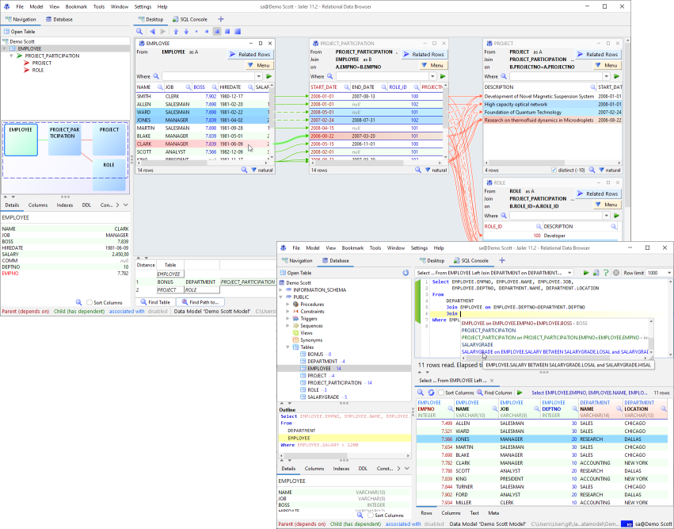
The Data Browser
Start "Jailer Data Browser" (or use JailerDataBrowser.sh|bat|exe)
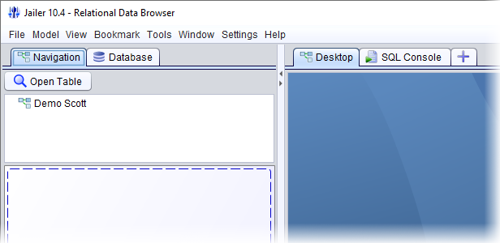
All begins with the first table
Open Table "EMPLOYEE".
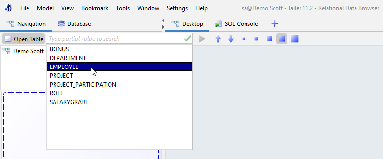
Our first table with the data of all employees appears.
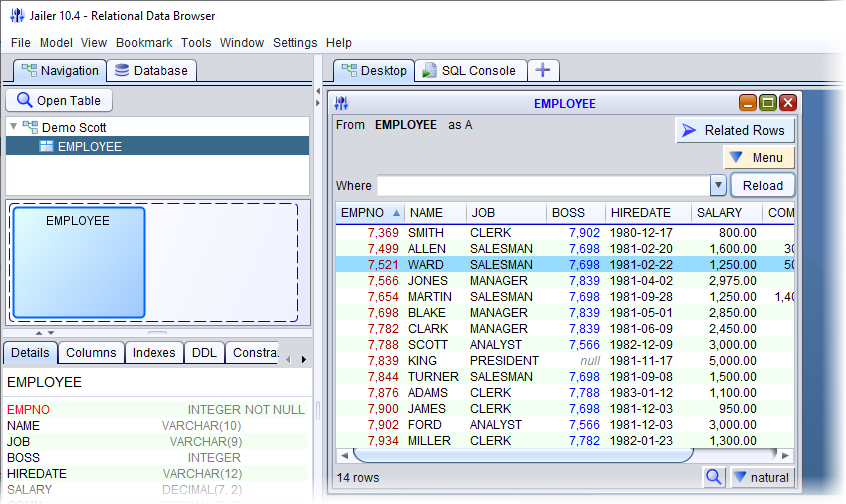
Where do they all work?
Under "Related Rows" we find the "DEPARTMENT" table.
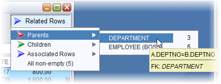
The "DEPARTMENT" table appears and shows not only all departments, but also which employee belongs to which department.
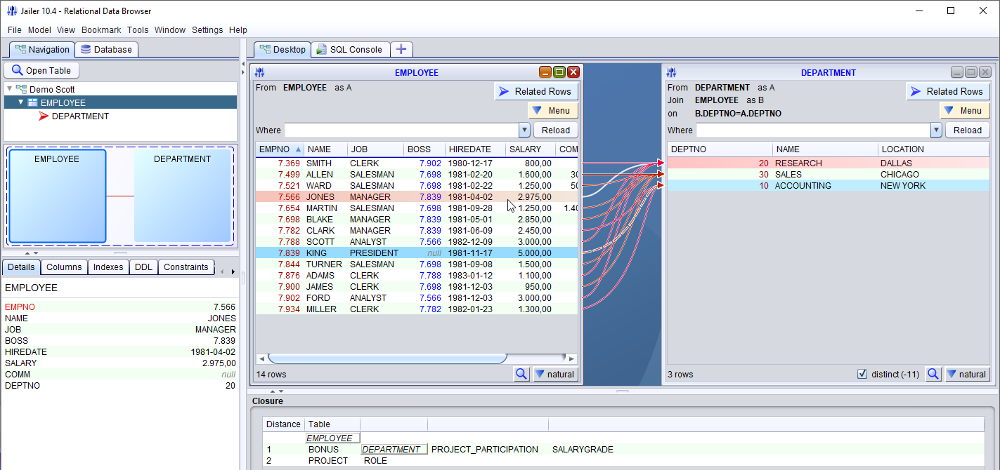
And what are they actually working on?
In the "Closure" view we can see with which tables the selected table is related. Moreover, also the relations of these and so on.
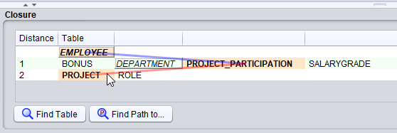
With a double click on "PROJECT" the table "PROJECT_PARTICIPATION" opens and with it connected "PROJECT".
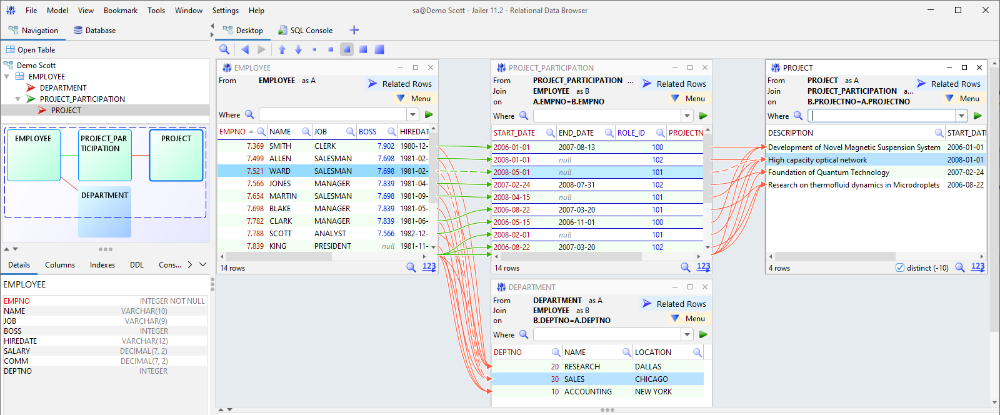
We can minimize the "PROJECT_PARTIPITATION" table...
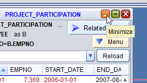
...to see the relationship between employees and projects directly.
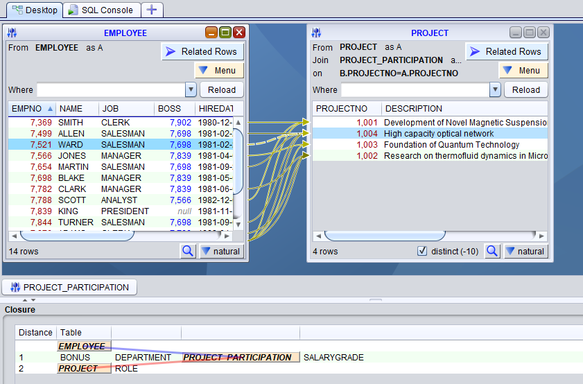
The way to the SQL console
From the network of interconnected tables on the desktop, we can automatically create an SQL query that will retrieve exactly the same data that can be seen here.
Use the menu item "Query Builder (Ctrl+Q)" to make some adjustments to this query first.
Use "SQL Console (Ctrl+Enter)" to go directly to the SQL console.
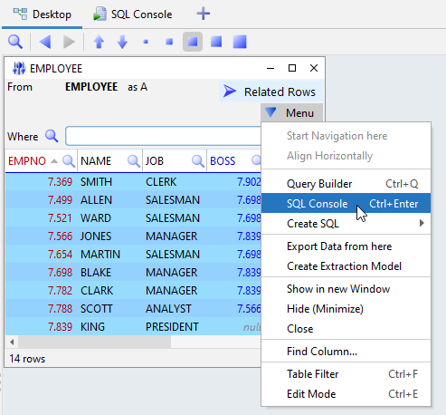
Using the console, we can then make whatever queries we want, view the results, and do all the things we usually do with such tools.
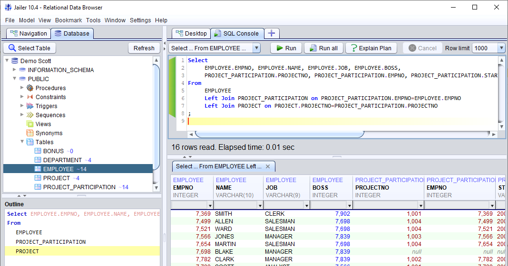
|